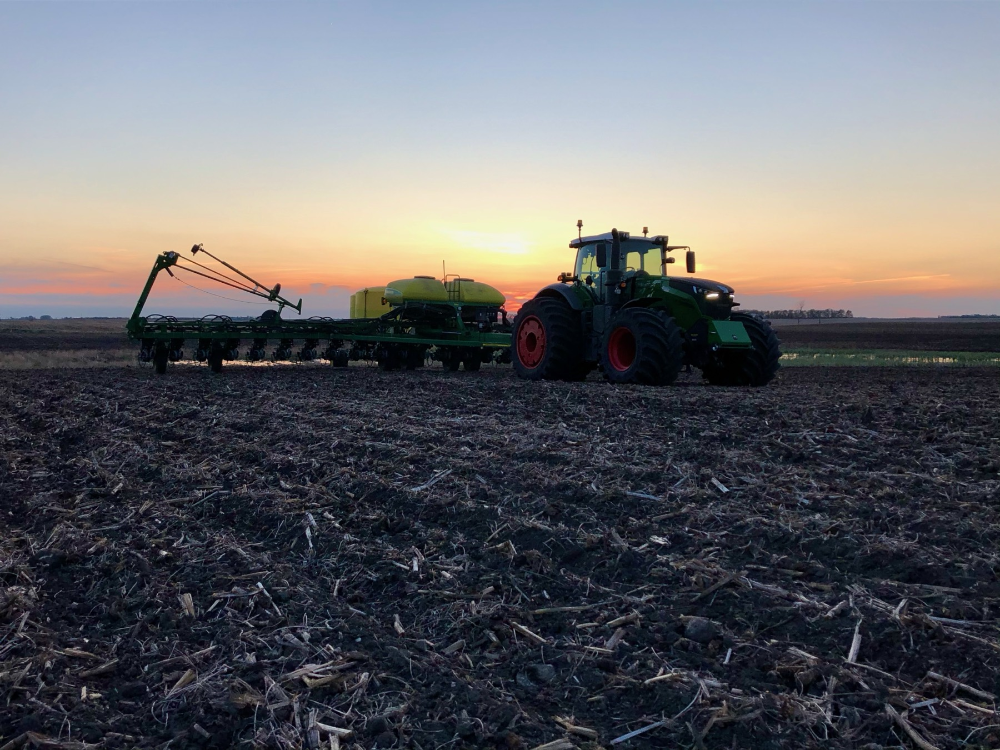
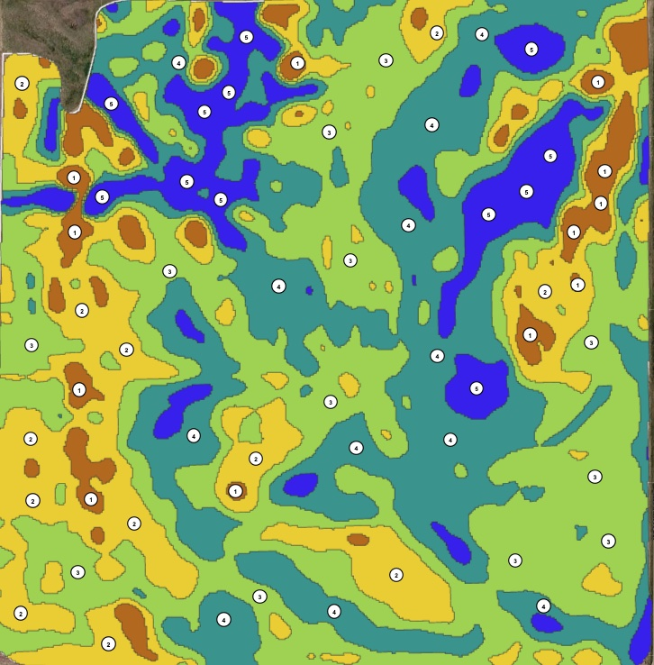
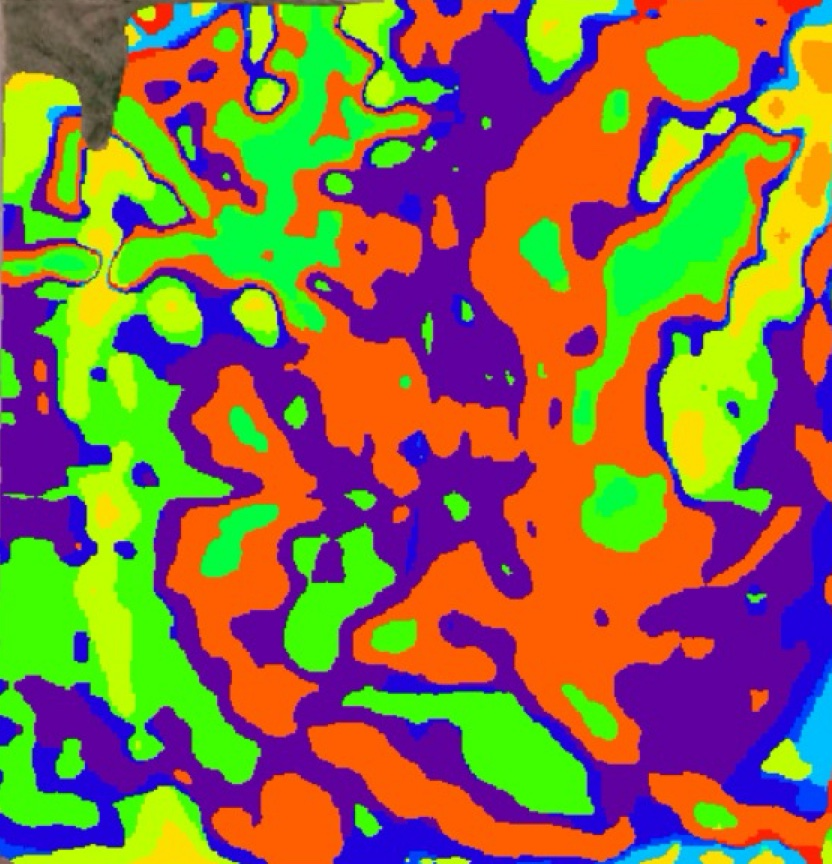
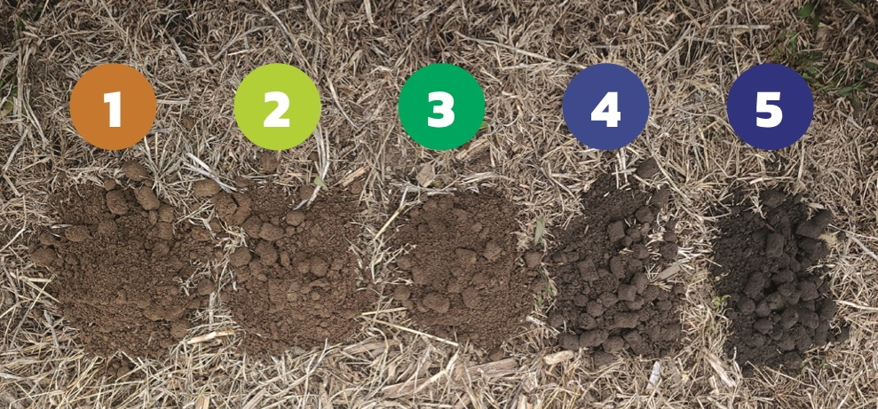
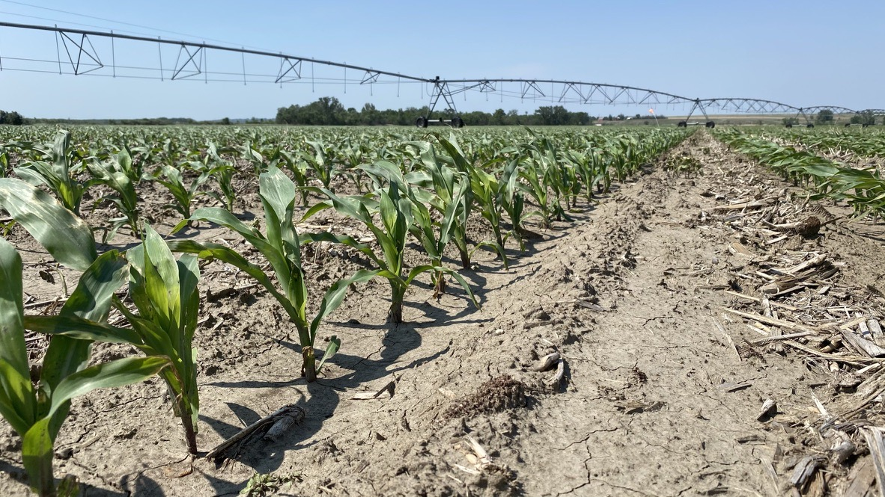
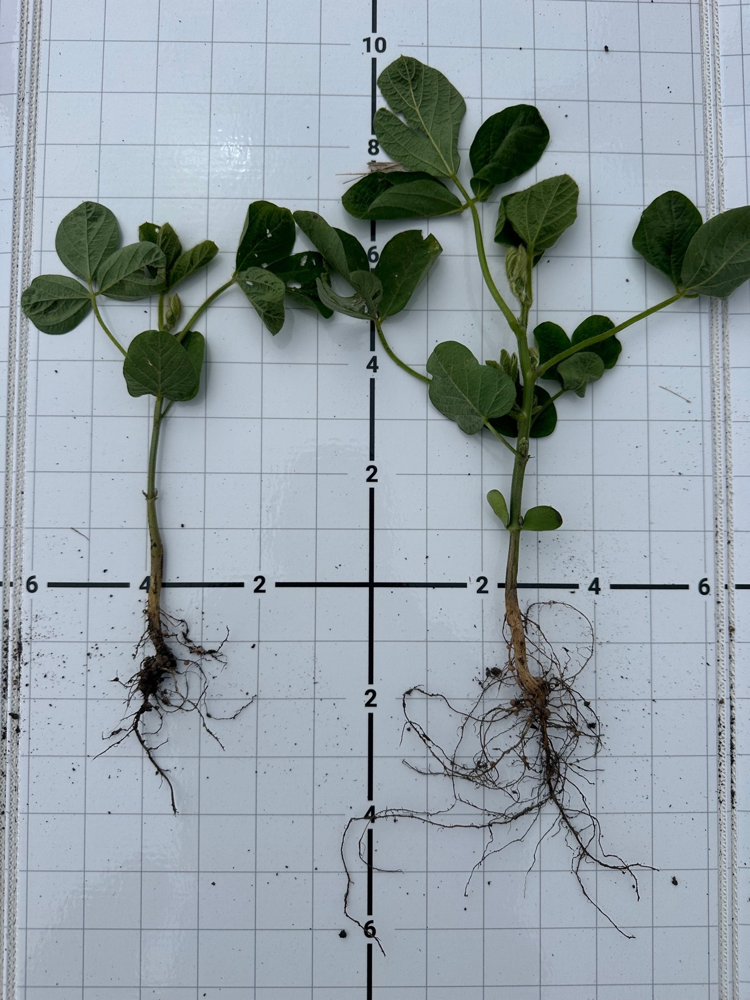
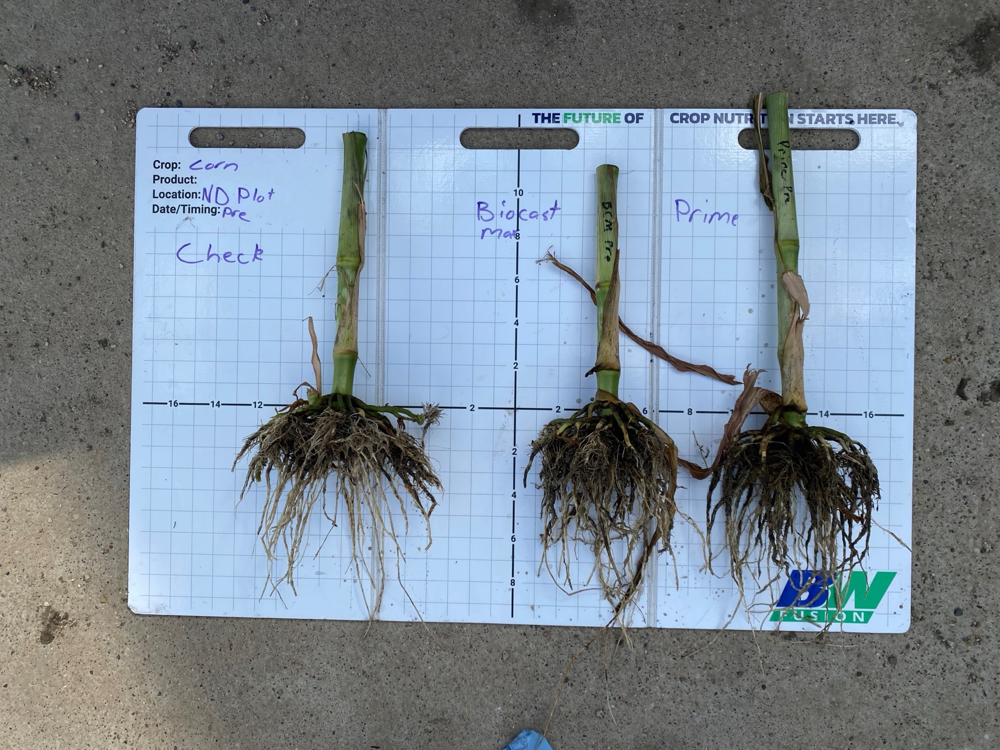
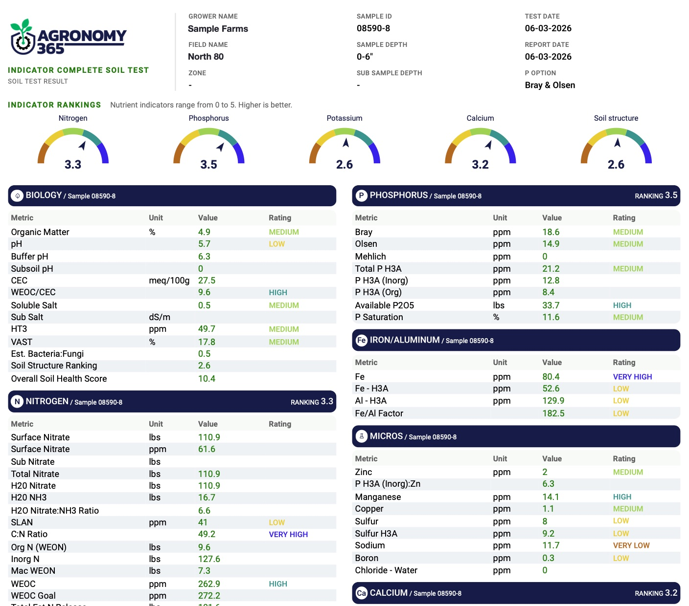

Zone maps & boundaries
Zones built from topography, soil texture and color, and how water moves. They set the frame for every prescription.
- Baseline Rx zone maps
- SF-RTK field boundaries
- JD Ops Center and AutoPath ready

We measure what your soil supplies, match it to what this year's crop needs, and manage the gap zone by zone and stage by stage. Start to finish, focused on soil health and your bottom line.
Your soil already supplies a large share of what the crop needs. Our job is to measure that supply, match it to what this year's crop actually needs, and fill only the difference.
That's a different starting point than a blanket pounds-per-bushel rate set in winter. With Agronomy 365 we read the full fertility bank, set yield goals by zone from biomass history, and adjust in season as soil and tissue samples come back.
“Good enough is the difference between profitability and losing money.”
Josh Messer, AgIntel
What this year's crop needs, from yield goals set by zone with biomass history and matched to growth stage.
What the fertility bank provides: plant-available now plus estimated release this season, from Indicator Complete.
What we apply: Baseline Rx by zone, then FertiCast and in-season samples decide when, and whether, it needs more.
Feed the gap, not the average. Not a blanket pounds-per-bushel rate set in winter, but a gap sized for this crop year and checked again in season.
We pull soil, tissue and grain from the same zones and tie the results together in Agronomy 365. That's how we know what the soil supplied, what the crop took up and what it turned into yield, instead of guessing from the yield monitor alone.
What's in the fertility bank and what's being released this season.
What the crop is actually pulling in at each growth stage.
What turned into yield and what left the field with it.
Averages guess. Baseline Rx measures what your soil can actually supply, zone by zone. It's the foundation every AgIntel recommendation is built on.

Measure · zone sample points
Plan · Baseline Rx scriptZones are defined by carbon and nutrient cycling. Pull a sample from each one and set them side by side: color, texture and structure all change, even within one field. Zone 1 needs the most help filling the gap. Zone 5 supplies the most on its own.

Lowest carbon and nutrient cycling. The fertility plan carries more of the load.
Building carbon. The soil is starting to cycle and contribute more.
Balanced, consistent and reliable nutrient supply.
High carbon and strong cycling, but supply depends on drainage.
Highest carbon, the most cycling and the most nutrient supply.
Baseline Rx is the foundation. Get it right, and every decision after it gets sharper.
Every service runs on the Baseline Rx platform and feeds the same Agronomy 365 record for your farm.
Zones built from topography, soil texture and color, and how water moves. They set the frame for every prescription.
Georeferenced sampling that lines up year after year, tested well past the standard panel.
Zone-by-zone scripts that cover the gap between what the soil supplies and what the crop needs, with nothing wasted.
Put water where the soil can use it. VRI scripts follow soil texture and water-flow paths on your zones.
We know the equipment as a whole and make sure every setting is right, from setup to planting to troubleshooting.
Plot and field-scale trials every season, so recommendations are backed by local results.
Good agronomy only pays if the equipment runs right. We know planters, sprayers, applicators and the technology that runs them, and we make sure every setting is right for your fields, not just the prescription.
We spec, install and set up displays, receivers and controllers, plus the boundaries and guidance lines they run on.
Depth, downforce, meters, closing system, rates and more, set for your soil and conditions before the equipment rolls.
When something isn’t running right, call us. We know the equipment, the technology and the agronomy, so it gets fixed in the field.
Planting, as-applied and yield data come back clean and sit next to your soil, tissue and grain results in Agronomy 365.
Tech in. Every setting dialed. Data back. Next year starts sharper.

Fertility, seed and water prescriptions, all built on the same Baseline Rx zones.
Every year we run our own research plots and field-scale trials across North Dakota. What we learn there goes straight into the recommendations we make on your acres.


2,500 acres of irrigated and dryland corn, strip-till with Y-drop and 2x2, on Baseline Rx since 2019. Same zones, same sampling, six seasons of connected data.
2019 early frost · 2020 and 2021 drought
Every sample we pull and every prescription we write lands in your Agronomy 365 dashboard, with reports you can actually read and share.
Three nutrient pools. Total, extractable and plant-available, so you see the whole fertility bank and not just what one extraction finds.
FertiCast playbooks. In-season nutrient plans matched to growth stage and your field history.
One dashboard. Fields, zones, trials, soil and tissue results and weather together, on the web or the mobile app, shared with your team.

All three nutrient pools by zone, nutrient relationships and a soil health score.
Growth-stage tissue results that show what the crop is actually taking up in season.
Baseline Rx fertility, seed and VRI scripts with a PDF report and fertility budget.
Irrigation and spray water quality, so you know what is going on with every pass.
What your harvest took off each field, so next year's plan replaces it.
A season review that ties inputs, trials and yield together and sets up next year.
OM, Nitrate, P, K, S, Ca, Mg, Zn, Mn, Fe, Cu, B, Na, pH, Buffer pH, EC, CEC
VAST, SLAN, HT3, Ammoniacal N, Total Organic N, Total Organic Carbon, H3A extract package, nutrient relationships and soil health score
Soil analysis is run by Next Level Ag, an accredited lab. Learn more at agronomy365.com.
Agronomy 365 runs every field through the same loop: measure what the soil can supply, plan around it, prove it in the crop, and refine for next year.
What can each zone supply?
Define what each zone can supply, how it cycles, and where the plan has to fill the gap.
What fills the gap, and does it pay?
Turn soil data into a fertility plan. Compare products, rates, timing and placement, and see the ROI before anything is bought. Scripts load straight to the monitor.
Did the crop take it up? Is the soil still supplying?
In-season tissue and soil tell a true shortage apart from an uptake, movement or conversion problem, while there is still time to fix it.
What worked, what didn't, and why?
Yield, grain removal, tissue and weather tied into one record. We sit down with you, and next year's plan starts sharper.
Same loop, every field, every year. Refine feeds next year's Measure.
Call or email either of us, or send a note here and we'll get back to you.